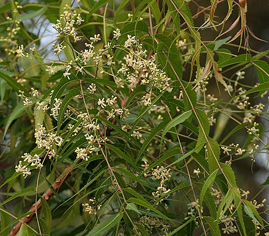

Azadirachta indica, commonly known as neem, nimtree or Indian lilac,[3] is a tree in the mahogany family Meliaceae. It is one of two species in the genus Azadirachta, and is native to the Indian subcontinent and most of the countries in Africa. It is typically grown in tropical and semi-tropical regions. Neem trees also grow on islands in southern Iran. Its fruits and seeds are the source of neem oil.
The neem tree is noted for its drought resistance. Normally it thrives in areas with sub-arid to sub-humid conditions, with an annual rainfall of 400–1,200 mm (16–47 in). It can grow in regions with an annual rainfall below 400 mm, but in such cases it depends largely on ground water levels. Neem can grow in many different types of soil, but it thrives best on well drained deep and sandy soils. It is a typical tropical to subtropical tree and exists at annual mean temperatures of 21–32 °C (70–90 °F). It can tolerate high to very high temperatures and does not tolerate temperature below 5 °C (41 °F). Neem is one of a very few shade-giving trees that thrive in drought-prone areas e.g. the dry coastal, southern districts of India and Pakistan. The trees are not at all delicate about water quality and thrive on the merest trickle of water, whatever the quality. In India and tropical countries where the Indian diaspora has reached, it is very common to see neem trees used for shade lining streets, around temples, schools and other such public buildings or in most people's back yards. In very dry areas the trees are planted on large tracts of land.